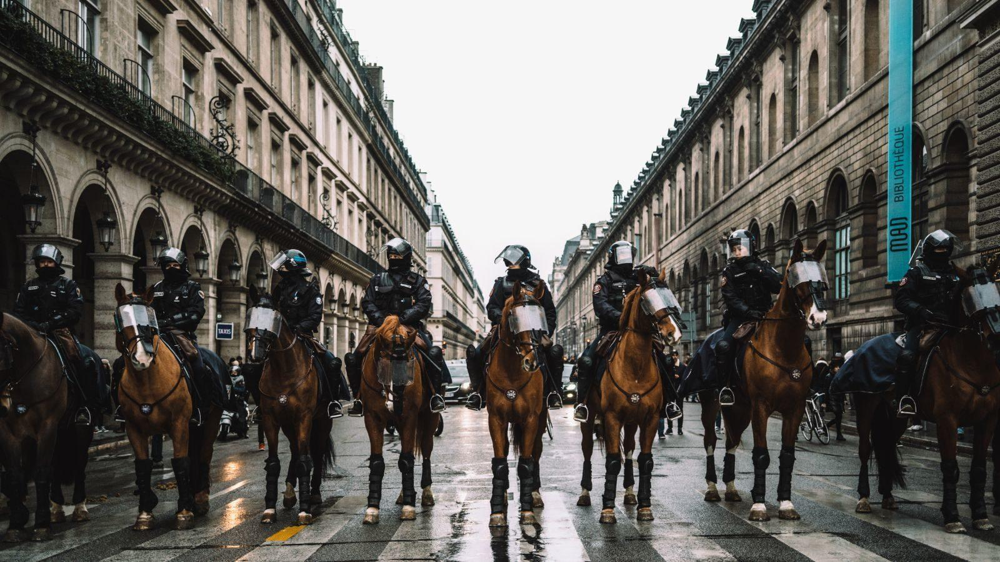

Orden y monopolización de la violencia - Cuestionario
El "orden y monopolización de la violencia" se refiere a dos conceptos fundamentales en la teoría política y sociológica que describen la forma en que las sociedades organizan y controlan el uso legítimo de la fuerza dentro de su territorio.
El "orden y monopolización de la violencia" se refiere a dos conceptos fundamentales en la teoría política y sociológica que describen la forma en que las sociedades organizan y controlan el uso legítimo de la fuerza dentro de su territorio.
Orden:Orden: El orden se refiere a la estructura y estabilidad social en la que se mantienen ciertas normas, leyes y jerarquías que regulan la conducta de los individuos y grupos dentro de una sociedad. Este orden puede ser político, económico, legal, social, entre otros aspectos, y se sostiene mediante la aplicación de ciertas reglas y el ejercicio de la autoridad.
Monopolización de la Violencia: Este concepto, popularizado por el sociólogo alemán Max Weber, describe la idea de que en una sociedad organizada, el Estado tiene el derecho exclusivo o el monopolio legítimo de usar la violencia física para mantener el orden y hacer cumplir las leyes. Esto significa que solo el Estado, a través de sus instituciones como la policía y las fuerzas armadas, tiene la autoridad para ejercer la fuerza física en situaciones específicas, como el mantenimiento del orden público, la defensa nacional y la aplicación de la ley.
MANIFESTACIONES DEL ORDEN Y LA MONOPOLIZACIÓN DE LA VIOLENCIA
1. El Estado Moderno:
El concepto de orden y monopolización de la violencia se manifiesta en el surgimiento del Estado moderno, que se fundamenta en el monopolio legítimo de la violencia para mantener el orden interno y protegerse de amenazas externas. Max Weber, en su obra "La política como vocación", definió al Estado como la entidad que posee el monopolio del uso legítimo de la fuerza en un territorio determinado. Esto implica que solo el Estado tiene el derecho exclusivo de usar la violencia dentro de sus fronteras, lo que le confiere autoridad y soberanía sobre su población.
2.Instituciones Policiales:
Las instituciones policiales son un componente fundamental en la manifestación del orden y la monopolización de la violencia. Responsables de hacer cumplir la ley y mantener la seguridad ciudadana, las fuerzas policiales son el brazo ejecutor del Estado en la aplicación de su monopolio de la violencia legítima. Sin embargo, su actuación puede generar controversias y debates en torno al uso de la fuerza, la discriminación racial y los abusos de poder. Las tácticas policiales, como la militarización, la vigilancia y el uso de la fuerza letal, están sujetas a escrutinio público y pueden afectar la percepción de legitimidad del Estado.
3. Fuerzas Armadas y Defensa Nacional:
Las fuerzas armadas desempeñan un papel crucial en la defensa nacional y la proyección del poder estatal a nivel internacional. Su existencia y funcionamiento están directamente relacionados con el monopolio estatal de la violencia. Sin embargo, el uso de la violencia militar plantea importantes dilemas éticos y legales, especialmente en conflictos armados donde se cuestiona su legitimidad o proporcionalidad. El control civil sobre las fuerzas armadas es un principio fundamental en las democracias, garantizando que el uso de la fuerza militar esté sujeto a la supervisión y autorización del poder político elegido democráticamente.
4.Otros Actores y Formas de Violencia Monopolizada:
Además del Estado y sus instituciones, existen otros actores que pueden ejercer formas de violencia monopolizada. Grupos paramilitares, agencias de seguridad privada y organizaciones criminales pueden desafiar o complementar el monopolio estatal de la violencia, planteando desafíos adicionales para el mantenimiento del orden y la protección de los derechos humanos. Estos actores pueden operar en un contexto nacional o internacional, desafiando la autoridad del Estado y socavando su capacidad para garantizar la seguridad y el bienestar de sus ciudadanos..
5.Perspectivas Comparativas e Internacionales:
Comparativamente, la manera en que diferentes Estados abordan el tema varía considerablemente. Desde dictaduras represivas hasta democracias liberales, cada sistema político tiene su propio enfoque en la organización y el ejercicio del monopolio de la violencia. Además, a nivel internacional, las relaciones entre Estados y organizaciones internacionales están influenciadas por la distribución del poder militar y la capacidad de coerción. Los tratados internacionales y las normas de derechos humanos también juegan un papel importante en la regulación y limitación del uso de la violencia estatal en el ámbito global.
Desafíos y Críticas:
El concepto de monopolización de la violencia y su implementación por parte del Estado enfrentan una serie de desafíos y críticas, que van desde preocupaciones éticas y legales hasta problemas prácticos en la aplicación de políticas de seguridad y justicia.
1. Abusos de poder y violaciones de derechos humanos
Uno de los principales desafíos es el riesgo de abusos por parte de las autoridades encargadas de hacer cumplir la ley. Esto puede manifestarse en forma de violencia policial injustificada, detenciones arbitrarias, tortura y ejecuciones extrajudiciales. Tales acciones socavan la confianza en el Estado y generan resentimiento en la población.
2. Corrupción
Función: La corrupción dentro de las instituciones encargadas de hacer cumplir la ley es un problema extendido en muchas partes del mundo. Esta corrupción puede manifestarse en forma de sobornos, extorsión y colusión con grupos delictivos, lo que debilita la capacidad del Estado para mantener el orden y la seguridad.
3. Discriminación y perfil racial
Existe preocupación por la discriminación racial y el perfil racial por parte de las fuerzas policiales en muchos países. Los informes muestran que ciertos grupos étnicos o minorías son más propensos a ser objeto de arrestos, violencia policial y condenas judiciales. Esto plantea serias interrogantes sobre la equidad y la justicia en el sistema legal.
En conclusión, el concepto de orden y monopolización de la violencia es fundamental para entender la dinámica del poder en las sociedades modernas. La capacidad del Estado para mantener el orden interno y protegerse de amenazas externas mediante el ejercicio exclusivo y legítimo de la fuerza coercitiva es un elemento central en la organización política y social.
Pregunta 1: ¿Qué significa el concepto de "orden" en el contexto del monopolio de la violencia?
Pregunta 2: ¿Quién según Max Weber tiene el derecho exclusivo de usar la violencia física legítima?
Pregunta 3: ¿Qué función desempeñan las instituciones policiales en el contexto del monopolio de la violencia?
Pregunta 4: ¿Qué otros actores pueden desafiar el monopolio estatal de la violencia?
REPRESENTACIÓN

Video
Bibliografía
- Weber, M. (1921). Economy and Society: An Outline of Interpretive Sociology. New York: Bedminster Press, 2(1), 1-902.